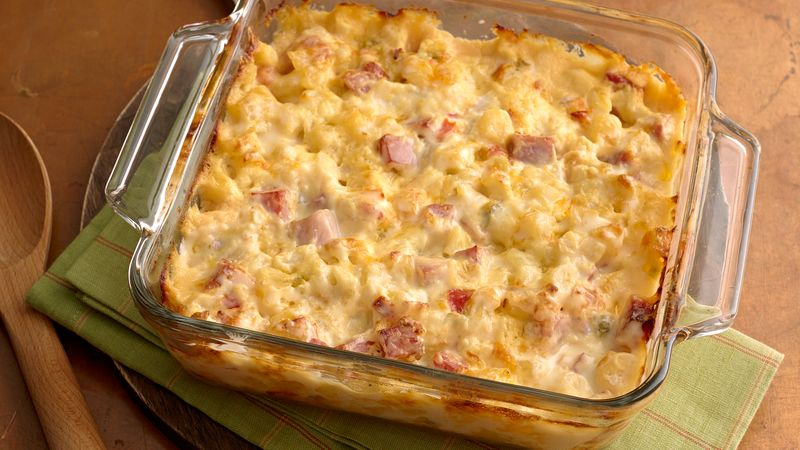

Ham and Potato Casserole

A hearty and delicious casserole for days where you need a simple, feel-good meal
Ingredients
- 4 cups frozen potatos
- 1 1/2 cups cubed ham (3/4-inch pieces
- 1 cup shredded Monterey Jack cheese
- 1 can condensed cream of chicken soup
- 1/2 cup sour cream
Directions
- Heat oven to 375. Grease 2 quart glass baking dish
- In a large bowl, mix all ingredients; spoon into baking dish
- Bake 50 to 55 minutes or until bubbly and hot. Let stand 5 minutes